ברוכים הבאים לעמוד המדריכים !
אם הגעתם לכאן כנראה שתהיתם לעצמכם לא פעם ולא פעמיים, איך המלצרית פותחת כל כך מהר את בקבוק היין ?
למה כשטועמים יין מסובבים את הכוס ? כיצד מחזיקים את הכוס כאשר שותים את היין ?
צירפנו לכם סרטוני הדרכה קצרים, שלאחר שתצפו בהם יהיו לכם תשובות לכל השאלות.
איך פותחים בקבוק יין ?
אז בחרת יין יבש מזן מעולה בעל עפיצות נמוכה, גוף קל ומחיר גבוה.
הזמנת את המשפחה, החברים או שהחלטת סוףסוף לצאת לדייט.
אבל אין לך מושג כיצד לפתוח בקבוק בלי להסתבך לעשות פאדיחות או חלילה לשבור את הפקק.
לחיצה על החץ הלבן והכול יסתדר

איך שותים יין ?
אתה נמצא באירוע החברה השנתי, בחתונה של החבר הכי טוב או סתם קפצת לבר לדרינק,
אתה רואה את האנשים השונים שותים יין צוחקים ונהנים, גם לך מגיע משהו לשתות והמשקה היחיד המוצע הוא כמובן – יין.
אל דאגה לאחר הסרטון אתה תדע כיצד מחזיקים את הכוס ומה הם שלבי הטעימה.